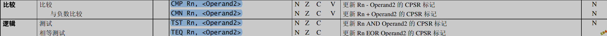

Arm指令
基本概念
Arm处理器特点
- 体积小、低功耗、低成本、高性能.
- 支持Thumb(16位)/ARM(32位)双指令集,能很好的兼容8位/16位器件.
- 大量使用寄存器,指令执行速度更快.
- 大多数数据操作都在寄存器中完成.
- 寻址方式灵活简单,执行效率高.
- 指令长度固定.
数据和指令类型
Arm约定数据长度如下:
| byte(字节) | 8bits |
|---|---|
| Halfword(半字) | 16bits |
| Word(字) | 32bits |
Arm指令集:
| 指令集 | 指令长度 |
|---|---|
| thumb | 2字节(16位) |
| arm | 4字节(32位) |
| thumb2(常用) | 2字节和4字节混合 |
工作状态
- ARM状态:32位,ARM状态执行字对齐的32位ARM指令.
- Thumb状态:16位,执行半字对齐的16位指令.
状态的切换,看标志寄存器的T位.
寄存器
ARM 处理器一般共有37个寄存器,其中包括:
- 31个通用寄存器,包括 PC(程序计数器)在内,都是32位的寄存器
- 6个状态寄存器,都是32位的寄存器
3环可操作的寄存器有17个,R0-R15 CPSR(标志寄存器),除此之外 还有浮点寄存器
重要寄存器:
- R13(SP):栈指针.
- R14(LR):链接寄存器,保存返回值.Call指令,将Call的下条指令地址给R14,但是当Call中嵌套调Call时,还是会将LR寄存器压栈保存.
- R15(PC):程序计数器,等价于x86的EIP.
历史遗留别名寄存器:
- R11(FP)
- R12(IP)
标志寄存器:

编译环境
手工编译
本地程序生成过程:
预处理
|
|
C到汇编
|
|
汇编到Arm
|
|
链接
|
|
汇编编译器:

编译的时候用Clang 加命令行参数-S,就可以调到上述的汇编编译器.

示例:
hello.c:
|
|
Markfile脚本:
|
|
Cmake编译
不支持Arm编译,仅支持x86汇编.

ndk-build编译
- 新建一个jni或cpp文件夹,将.s文件放进去.
|
|
- 新建一个Android.mk文件.
|
|
- 新建一个Application.mk文件.
|
|
- 命令行输入ndk-build进行编译.

Arm调试
准备一个Arm虚拟机或者真机
概述:
将IDA中的dbgsrv程序放到Android系统中并运行起来,然后和IDA交互完成调试.

将ndk程序(LuoHello)以及IDA dbgsrv放到Android系统中
|
|
IDA调试设置:


远程启动:
保证上述IDA dbgsrv运行起来

IDA远程启动


Main函数

调试推荐:
- 定位Main函数.

- 找到Main函数后 F2下个断.

- F9选择调试器,配置好参数就可以调试了.


寻址方式
寄存器寻址
|
|
立即寻址
|
|
寄存器移位寻址
|
|
寄存器间接寻址
|
|
基址寻址
|
|
多寄存器寻址
|
|
堆栈寻址
概述:
堆栈方向
- 向上生长:向高地址方向生长, 称为递增堆栈
- 乡下生长:向低地址方向生长, 称为递减堆栈

满和空堆栈

堆栈方式

|
|
示例:
|
|
块拷贝寻址
|
|
|
|
相对寻址

Arm指令格式


存储器访问指令
单寄存器
概述:


指令编码:


加载指令:
|
|
存储指令:
|
|
寻址方式:

|
|
多寄存器
概述:


指令编码:

8种模式:

加载指令:
|
|
存储指令:
|
|
入栈出栈:
|
|
寄存器和存储器交换

|
|
数据处理指令
指令编码

操作码表
| 操作码 | 指令助记符 | 说明 |
|---|---|---|
| 0000 | AND | 逻辑与操作指令 |
| 0001 | EOR | 逻辑异或操作指令 |
| 0010 | SUB | 减法运算指令 |
| 0011 | RSB | 逆向减法指令 |
| 0100 | ADD | 加法运算指令 |
| 0101 | ADC | 带进位加法 |
| 0110 | SBC | 带进位减法指令 |
| 0111 | RSC | 带进位逆向减法指令 |
| 1000 | TST | 位测试指令 |
| 1001 | TEQ | 相等测试指令 |
| 1010 | CMP | 比较指令 |
| 1011 | CMN | 负数比较指令 |
| 1100 | ORR | 逻辑或操作指令 |
| 1101 | MOV | 数据传送 |
| 1110 | BIC | 位清除指令 |
| 1111 | MVN | 数据非传送 |
数据传送指令


|
|
算术逻辑运算指令

|
|
注意
加法进位 Carry位为1 减法借位 Carry位为0
逻辑指令

|
|
比较指令

|
|
乘法指令

|
|
除法指令
没有特定的指令,需要依靠其他指令做优化来完成除法运算.
编译器已将做好了库,直接调用即可.


跳转指令
概述

条件码

b的后面可以跟条件码,如beq,bne.
指令编码

IDA静态分析,切换指令集

指令示例
B:
|
|
BL:
bl所在的指令集和所调函数的指令集相同.
|
|
bl所在的指令集和所调函数的指令集不同.
|
|
BX:
|
|
BLX:
|
|
TBB:
|
|
TBH:
表跳转半字 B:byte H:half
PC = PC + ZeroExtend( Memory( Rn + Rm « 1, 2) « 1)
其他指令
中断指令
|
|
系统调用_exit
看下系统底层是如何调_exit这个API的:
测试代码:
|
|
操作:
IDA调试,F7跟进_exit.

结论:
- Android系统调API的中断是0.
- _exit的api编号是0xF8.
喜讯
- Android 0环Api调用的参数与3环参数相同.
- 目前Android所有版本API编号一样. 这与Windows有所不同,Windows不同版本,API编号也不一样.
- Android Ndk目录中有一个文件(unistd-common.h)记录了所有的API编号, ndk编程中不同指令集要包含不同路径下的unistd-common.h.
Arm调用_exit示例
|
|
NDK编程调用_exit示例
|
|
标志寄存器


|
|
伪指令
解决偏移问题
ADR:

|
|
ADRL:

adrl能计算的偏移更大,但是目前版本的编译器不能使用该伪指令.
解决给立即数问题
LDR:
|
|
NOP
目前nop指令已不是伪指令了,在早期版本nop指令是伪指令. 早期nop伪指令对应的汇编语句为 mov r0, r0.
浮点指令
寄存器:
|
|
在常规指令前加V即可,如VADD,VSUB,VMOV.
Arm指令参考
Arm应用
内联汇编
LuoHello.cpp
|
|
裸函数
|
|
混合编译
源文件:
LuoArm.s
|
|
LuoHello.cpp
|
|
Android.mk
|
|
Application.mk
|
|
编译:
输入ndk-build进行编译.

运行:
确保Android虚拟机在开着.

调试
调试api:
https://man7.org/linux/man-pages/man2/ptrace.2.html
|
|
调试示例:
|
|
代码注入
- 思路
在远程进程中申请一段地址空间,将要注入的动态库文件的路径写进去,然后在远程进程中调dlopen函数将动态库加载到内存中.
- 细节
①如何在远程进程中申请地址空间?
我们知道在自身进程中,可以调用mmap函数来申请地址空间.我们可以附加远程进程,将pc寄存器的值设置为远程进程中mmap函数的地址(这个地方需要注意的就是pc寄存器值的低位不可能为1),然后运行程序,函数的返回值就是申请的地址空间.
②如何计算远程api函数的地址?
远程api函数地址 = 远程api函数所在模块基址 + (自身进程api函数地址 - 自身进程api函数所在的基址).
③如何知道api函数在哪个模块中?
我们可以在自身进程中打印api函数地址以及所有的内存模块地址,比对api函数地址在哪个内存模块地址范围内,即可知道api函数所在的模块.
④如何知道远程进程api函数执行完毕?
我们在执行远程进程api函数之前,将lr寄存器的值设置为0,这样远程进程api函数执行完毕,就会产生异常.我们可以调用waitpid这个函数来等待异常(这个函数在异常没来之前会阻塞),当执行到waitpid的下一行的时候,说明远程进程api函数已经执行完毕.
- 源代码
注入的目标程序:
|
|
注入的动态库:
|
|
注入程序:
步骤:
- 附加目标进程.
- 保存寄存器环境.
- 修改寄存器环境.
- 在远程进程中申请地址空间.
- 将库路径写入申请的地址空间中.
- 将远程进程dlopen的地址给pc寄存器.
- 还原寄存器环境.
- 取消附加.
|
|
- 注入

需要注意的是,前面我们讲不是父子进程之间调试,就需要root权限.这里注入程序和注入的目标程序,不是父子关系没有root权限也可以调试的原因是:它们两个都是shell用户启动的,同用户名.